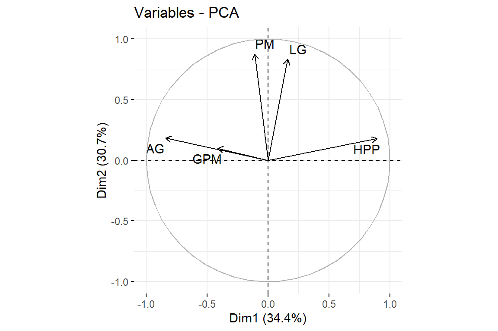

Chapter 9 Análisis de componentes principales
9.1 Introducción
El Análisis de Componentes Principales (Principal Component Analysis), es una técnica multivariada que tiene como objetivo reducir la dimensionalidad, es decir, explicar con el menor número de variables posibles, la mayor cantidad de variancia del experimento. Para ello, se crea un nuevo conjunto de variables a la cual llamaremos componentes.
El PCA tiene un uso exploratorio y descriptivo.
Se emplea para variables cuantitativas.
Es la puerta de entrada para la creación de modelos inferenciales y predictivos.
9.2 ¿Que es un componente?
Es una variable creada por la relación lineal entre distintas variables originales.
Los componentes son variables ortogonales, es decir, su correlación entre ellas es nula.
9.3 ¿Cómo se seleccionan los componentes principales?
Se seleccionan a través de tres criterios:
Criterio práctico: Seleccionar a los dos primeros componentes.
Criterio de la media aritmétrica. Seleccionar a todos aquellos componentes que expliquen la variancia de más de una varible original. Es se observa en el autovalor (). Si es mayor a 1, se elige este componente como principal.
Criterio del gráfico de sedimentación. Es muy similar al criterio de la media aritmétrica. En ese criterio se usa un gráfico en forma de media montaña, donde se observa que a medida que aumenta el número de componentes, se va disminuyendo la explicación de la variancia del componente creado.
9.4 Aplicación: Caso Maíz
Tratamiento <- factor(maiz$Tratamiento)
data.PCA <- maiz%>%
select(HPP, GPM, LG, AG, PM)9.4.1 Correlación de variables
cor <- cor(data.PCA)
corrplot(cor)p.mat <- cor_pmat(data.PCA)
ggcorrplot(cor, hc.order = F,
type = "lower", p.mat = p.mat) ggcorrplot(cor, hc.order = F,
type = "lower", p.mat = p.mat,
insig = "blank")9.4.2 Análisis de componentes principales
Forma 1
acp <- FactoMineR::PCA(data.PCA, scale.unit = T, ncp = 5, graph = F)
summary(acp)
Call:
FactoMineR::PCA(X = data.PCA, scale.unit = T, ncp = 5, graph = F)
Eigenvalues
Dim.1 Dim.2 Dim.3 Dim.4 Dim.5
Variance 1.719 1.536 1.035 0.442 0.268
% of var. 34.386 30.713 20.699 8.846 5.356
Cumulative % of var. 34.386 65.099 85.798 94.644 100.000
Individuals (the 10 first)
Dist Dim.1 ctr cos2 Dim.2 ctr cos2 Dim.3 ctr cos2
1 | 2.320 | 2.101 0.401 0.820 | -0.078 0.001 0.001 | -0.978 0.144 0.178 |
2 | 2.013 | 0.611 0.034 0.092 | 0.101 0.001 0.003 | -1.801 0.490 0.800 |
3 | 1.650 | 1.381 0.173 0.701 | 0.290 0.009 0.031 | -0.780 0.092 0.223 |
4 | 2.680 | -0.571 0.030 0.045 | -0.778 0.062 0.084 | -2.479 0.927 0.855 |
5 | 0.935 | 0.793 0.057 0.719 | -0.144 0.002 0.024 | -0.408 0.025 0.190 |
6 | 1.477 | 0.477 0.021 0.104 | -0.547 0.030 0.137 | -1.163 0.204 0.620 |
7 | 1.788 | 0.337 0.010 0.036 | -0.602 0.037 0.113 | -1.613 0.393 0.814 |
8 | 1.330 | 0.608 0.034 0.209 | 0.381 0.015 0.082 | -1.059 0.169 0.634 |
9 | 2.209 | 2.057 0.385 0.867 | 0.485 0.024 0.048 | -0.459 0.032 0.043 |
10 | 3.367 | 1.564 0.222 0.216 | -0.868 0.077 0.067 | -2.310 0.806 0.471 |
Variables
Dim.1 ctr cos2 Dim.2 ctr cos2 Dim.3 ctr cos2
HPP | -0.894 46.500 0.799 | 0.178 2.056 0.032 | 0.148 2.122 0.022 |
GPM | 0.417 10.104 0.174 | 0.099 0.638 0.010 | 0.870 73.208 0.758 |
LG | -0.160 1.489 0.026 | 0.833 45.139 0.693 | -0.285 7.853 0.081 |
AG | 0.842 41.218 0.709 | 0.185 2.223 0.034 | -0.356 12.240 0.127 |
PM | 0.109 0.689 0.012 | 0.876 49.945 0.767 | 0.218 4.578 0.047 |#acp$ind$contrib
colSums(acp$ind$contrib)Dim.1 Dim.2 Dim.3 Dim.4 Dim.5
100 100 100 100 100 # acp$ind$cos2
# rowSums(acp$ind$cos2)
# acp$ind$coord
acp$var$contrib Dim.1 Dim.2 Dim.3 Dim.4 Dim.5
HPP 46.5002070 2.0560761 2.121562 8.544112 40.7780426
GPM 10.1043069 0.6377917 73.207820 9.069750 6.9803323
LG 1.4889320 45.1390575 7.852844 44.729023 0.7901433
AG 41.2175394 2.2225611 12.239575 6.793278 37.5270458
PM 0.6890147 49.9445136 4.578199 30.863836 13.9244361colSums(acp$var$contrib)Dim.1 Dim.2 Dim.3 Dim.4 Dim.5
100 100 100 100 100 acp$var$cos2 Dim.1 Dim.2 Dim.3 Dim.4 Dim.5
HPP 0.79947101 0.031574032 0.02195741 0.03779034 0.109207203
GPM 0.17372182 0.009794217 0.75767480 0.04011522 0.018693947
LG 0.02559898 0.693175734 0.08127413 0.19783508 0.002116074
AG 0.70864691 0.034130651 0.12667523 0.03004646 0.100500747
PM 0.01184613 0.766970487 0.04738273 0.13650979 0.037290871rowSums(acp$var$cos2)HPP GPM LG AG PM
1 1 1 1 1 acp$var$coord Dim.1 Dim.2 Dim.3 Dim.4 Dim.5
HPP -0.8941314 0.17769083 0.1481803 0.1943974 0.3304651
GPM 0.4167995 0.09896574 0.8704452 -0.2002878 0.1367258
LG -0.1599968 0.83257176 -0.2850862 -0.4447866 0.0460008
AG 0.8418117 0.18474483 -0.3559146 0.1733391 0.3170185
PM 0.1088399 0.87576851 0.2176757 0.3694723 -0.1931084Forma 2
pca <- ade4::dudi.pca(data.PCA, scannf = F, scale = T, nf = 5)
pcaDuality diagramm
class: pca dudi
$call: ade4::dudi.pca(df = data.PCA, scale = T, scannf = F, nf = 5)
$nf: 5 axis-components saved
$rank: 5
eigen values: 1.719 1.536 1.035 0.4423 0.2678
vector length mode content
1 $cw 5 numeric column weights
2 $lw 640 numeric row weights
3 $eig 5 numeric eigen values
data.frame nrow ncol content
1 $tab 640 5 modified array
2 $li 640 5 row coordinates
3 $l1 640 5 row normed scores
4 $co 5 5 column coordinates
5 $c1 5 5 column normed scores
other elements: cent norm # pca$l1 # scores normalizados
# pca$li # scores
pca$co # coordenadas de variables Comp1 Comp2 Comp3 Comp4 Comp5
HPP 0.8941314 0.17769083 0.1481803 -0.1943974 -0.3304651
GPM -0.4167995 0.09896574 0.8704452 0.2002878 -0.1367258
LG 0.1599968 0.83257176 -0.2850862 0.4447866 -0.0460008
AG -0.8418117 0.18474483 -0.3559146 -0.1733391 -0.3170185
PM -0.1088399 0.87576851 0.2176757 -0.3694723 0.1931084# autovalores
summary(pca)Class: pca dudi
Call: ade4::dudi.pca(df = data.PCA, scale = T, scannf = F, nf = 5)
Total inertia: 5
Eigenvalues:
Ax1 Ax2 Ax3 Ax4 Ax5
1.7193 1.5356 1.0350 0.4423 0.2678
Projected inertia (%):
Ax1 Ax2 Ax3 Ax4 Ax5
34.386 30.713 20.699 8.846 5.356
Cumulative projected inertia (%):
Ax1 Ax1:2 Ax1:3 Ax1:4 Ax1:5
34.39 65.10 85.80 94.64 100.00 9.4.3 Gráfico de sedimentación
# primera forma
plot(pca$eig, type = "b", pch = 20, col ="blue")
abline(h=1, lty = 3, col = "red")fviz_eig(pca, geom = "line")+
theme_test()# segunda forma
eig.val <- get_eigenvalue(pca)
eig.val eigenvalue variance.percent cumulative.variance.percent
Dim.1 1.7192848 34.385697 34.38570
Dim.2 1.5356451 30.712902 65.09860
Dim.3 1.0349643 20.699286 85.79789
Dim.4 0.4422969 8.845938 94.64382
Dim.5 0.2678088 5.356177 100.000009.4.4 Correlación entre variables y componentes
pca$co Comp1 Comp2 Comp3 Comp4 Comp5
HPP 0.8941314 0.17769083 0.1481803 -0.1943974 -0.3304651
GPM -0.4167995 0.09896574 0.8704452 0.2002878 -0.1367258
LG 0.1599968 0.83257176 -0.2850862 0.4447866 -0.0460008
AG -0.8418117 0.18474483 -0.3559146 -0.1733391 -0.3170185
PM -0.1088399 0.87576851 0.2176757 -0.3694723 0.1931084corpca <- cbind(data.PCA,pca$li)
i = cor(corpca, method="pearson")
corrplot(i[1:5,6:10], sig.level = 0.05)9.4.5 Gráfico de variables sobre el círculo de correlaciones
fviz_pca_var(pca,repel = TRUE, axes = c(1,2))
fviz_pca_var(pca,repel = TRUE, axes = c(1,3))9.4.6 Gráfico de individuos sobre el primer plano de componentes
fviz_pca_ind(pca,repel = TRUE,geom.ind = c("text","point"),habillage = Tratamiento)Warning: ggrepel: 594 unlabeled data points (too many overlaps). Consider increasing max.overlaps9.4.7 Gráfico de individuos sobre el primer plano con biplot
fviz_pca_biplot(pca,repel = TRUE,habillage = Tratamiento)Warning: ggrepel: 600 unlabeled data points (too many overlaps). Consider increasing max.overlapsfviz_pca_biplot(pca,repel = TRUE,habillage = Tratamiento, addEllipses = T)Warning: ggrepel: 600 unlabeled data points (too many overlaps). Consider increasing max.overlaps